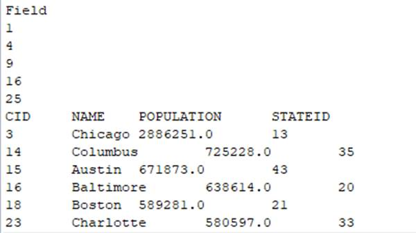
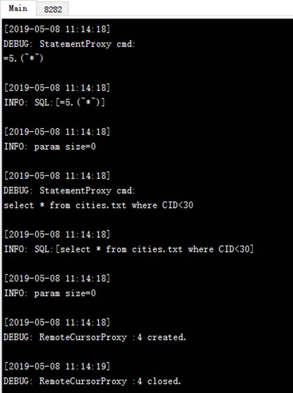
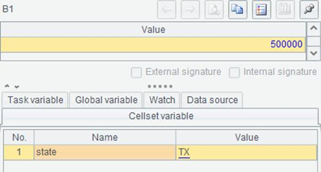

We can add -c option after an esprocx command to execute an input cellset script. In the cellset script, columns are separated by the Tab and lines are separated by the carriage return. Press Ctrl+C to finish the input and start execution. For example:

After starting the execution of esprocx –c, the following script is input:
[] >10.(A1=A1|#)
>output(A1)
According to the cellset script, ten numbers are added to A1¡¯s empty sequence and line 2 exports the sequence to the console. After pressing Ctrl+C, we get the output result in the console.
To view the result of executing the cellset script, the common way is to add -r option, as shown below:

By executing esprocx –r –c, we get the result of computing the cellset script. If there isn¡¯t a return statement in the cellset script, the command will return the value of executing the last cell.
We can also execute a simple SQL statement at the command line to query a data file on the main directory. For example:

Usually -r option is used when executing a simple SQL statement. For more information about executing simple SQL at command line, see Simple SQL. To query database data, certain settings need to be first completed in raqsoftConfig.xml file.